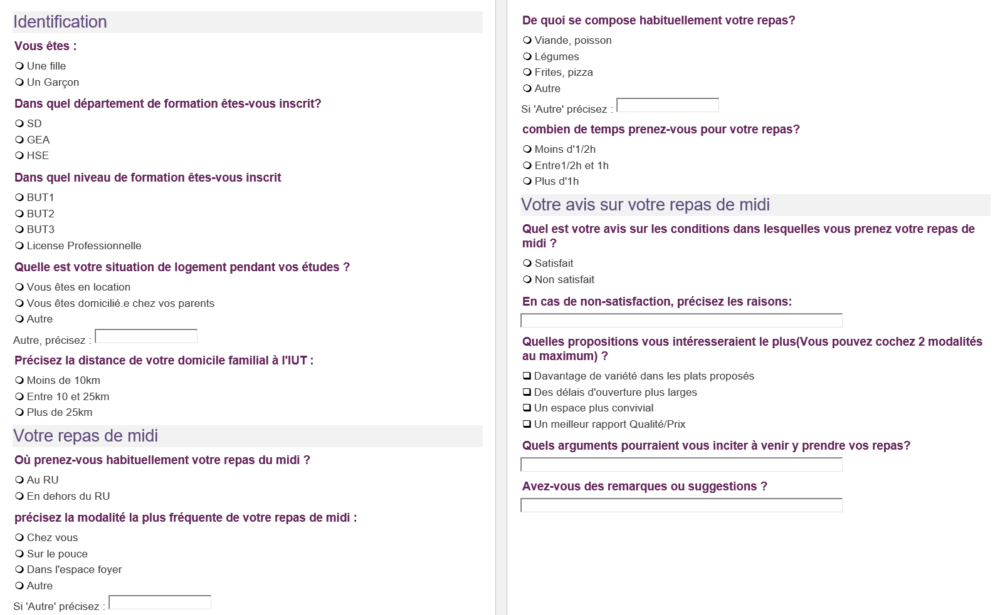
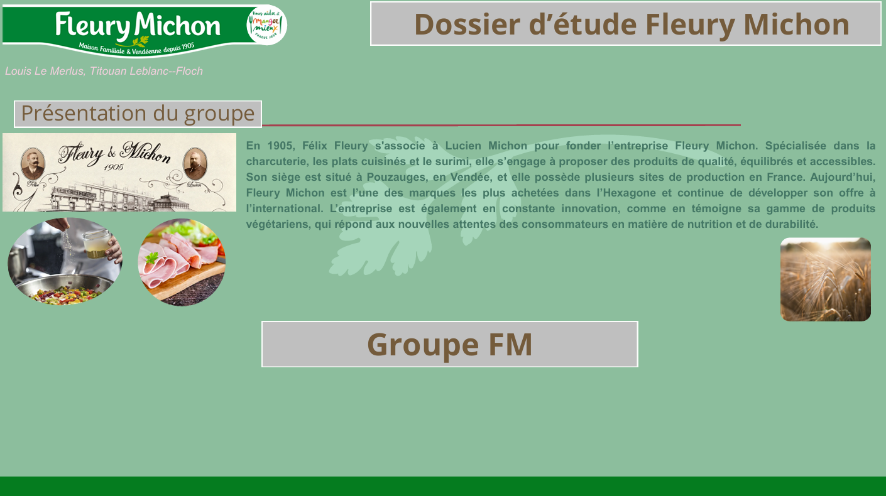
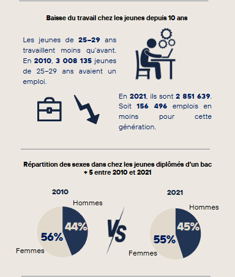
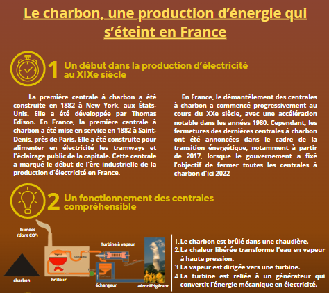

Mes Projets
Accueil
À propos
Contact
Bilan
Mes Projets réalisés
Voici l'ensemble des projets développés au cours de mes études en groupe ou en solo :
JO Sydney 2000
Création d'un reporting
Gestion de fichiers en Python
Mise en œuvre d'une enquête
Régression sur des données réelles
Construction et présentation d'indicateurs de performance
Journée Dataviz
Poster Communication
🌙
 JO Sydney 2000
JO Sydney 2000 Création d'un reporting
Création d'un reporting Gestion de fichiers en Python
Gestion de fichiers en Python Régression sur des données réelles
Régression sur des données réelles